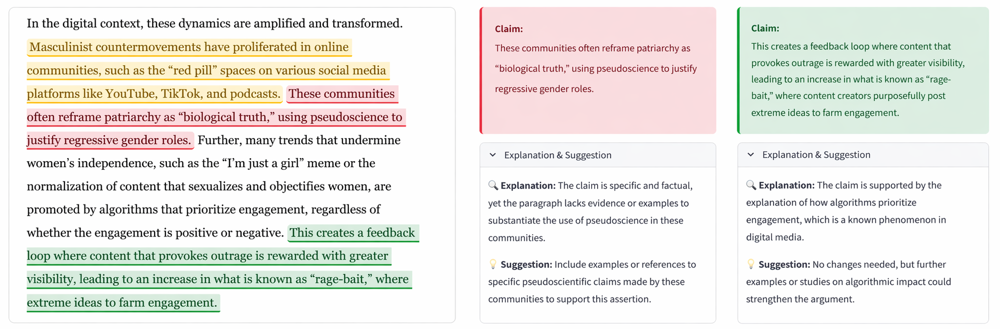

Motivation
The increasing integration of artificial intelligence (AI) into educational contexts has raised concerns about diminished higher-order cognitive engagement, particularly critical thinking. Prior research demonstrates that when learners offload cognitive processes to information technologies, their independent capacities may decline; emerging work on AI-assisted learning suggests similar risks (Gerlich, 2025; Georgiou, 2025).
This project investigates the relationship between AI usage and critical thinking by (i) surveying existing literature and (ii) designing a targeted intervention for an academic setting.
Faculty perspective
“How do we change the paradigm of how students use AI? Instead of watching the technology discourage learning, what if we adapted the technology to serve students and educators?"
Figure 1: Human in the Loop (HITL) Model of Critical Thinking (Nasr et al., 2025)
Background
Our approach adopts the Human-in-the-Loop (HITL) model of critical thinking, which holds that the underlying cognitive processes remain constant with or without technological mediation (Nasr et al., 2025). On this view, large language models (LLMs) can only augment—rather than replace—discrete stages within the critical thinking process. The HITL framework further enables these stages to be operationalized into four components: triggering, exploration, integration, and resolution.
Triggering
Tensions or ambiguities are made conscious, motivating reconsideration.
Exploration
Divergent thinking generates plausible solutions to the dissonance.
Integration
The solution-space prompts analytical reasoning to compare and evaluate possibilities in context of the initial problem.
Resolution
The new understanding needs to be applied to the initial problem and to update related schema along the way.
Approach
Given that AI assistance necessarily redistributes cognitive load, the central design question concerns which stages to support and to what extent. Our intervention selectively targets the triggering and exploration phases, while preserving student autonomy in integration and resolution for the reasons outlined here.
This design is motivated by two considerations. First, errors in reasoning are often opaque to the individual who produces them; LLM-guided prompting during the triggering phase may therefore increase opportunities for self-reflection by surfacing overlooked assumptions or inconsistencies. Second, the exploration phase frequently depends on familiarity with a range of theoretical frameworks, which students may not yet possess. Carefully structured AI assistance can broaden awareness of relevant perspectives without supplanting interpretive judgment.
By contrast, the integration and resolution stages are pedagogically valuable precisely insofar as they require independent evaluation and synthesis. Accordingly, these later stages are intentionally left to the student.
Faculty Input
We solicited guidance from MIT faculty to learn about their hopes and concerns for AI in the humanities classroom. During those meetings, a consistent source of curiosity was how future AI interventions could be deployed in the context of existing curricula. There are fears that bending too much to the technology risks creating a very artificial education and ultimately effaces the role of AI in serving students rather than the other way around.
The faculty also cited concerns about course relevance in LLM interactions, motivating a design that would directly integrate course content (i.e. syllabus, assignment, relevant documents including the students' work) as a guard-rail.
Together, these conversations outlined three goals in the development of our model.
- Identify where AI assistance may prompt reflection without replacing student judgment.
- Constrain model interaction through course-specific materials and assignment context.
- Preserve later-stage reasoning as the student's own evaluative and synthetic work.
Faculty perspective
“How can AI be used to widen perspectives on complex, highly-charged issues?”
Technical Development
The SoraticTutor uses GPT-4o to analyze student assignments in the context of course-specific objectives extracted from the class syllabus and assignment instructions. After parsing these materials, the system processes each essay paragraph to identify and evaluate individual claims, labeling them as supported, unsupported, or uncertain.
For each claim, it generates an explanation and targeted suggestions for improvement. Students can also engage in a “chat about this claim” feature, which provides Socratic-style feedback to help them strengthen their arguments through guided questioning.
Future steps include allowing professors to directly define and refine course objectives so system aligns feedback with instructor intent. Additional improvements could include customizable grading rubrics, versioned assignment tracking to show revision progress, explainable feedback summaries for instructors, and safeguards to ensure consistency and fairness across evaluations.

References
- Gerlich, M. (2025). AI Tools in Society: Impacts on Cognitive Offloading and the Future of Critical Thinking. Societies, 15(1), 6. https://doi.org/10.3390/soc15010006
- Georgiou, G. P. (2025). ChatGPT produces more “lazy” thinkers: Evidence of cognitive engagement decline. arXiv. https://doi.org/10.48550/arXiv.2507.00181
- Nasr, N. R., Tu, C.-H., Werner, J., Bauer, T., Yen, C.-J., & Sujo-Montes, L. (2025). Exploring the impact of generative AI ChatGPT on critical thinking in higher education: Passive AI-directed use or human–AI supported collaboration? Education Sciences, 15(9), 1198. https://doi.org/10.3390/educsci15091198